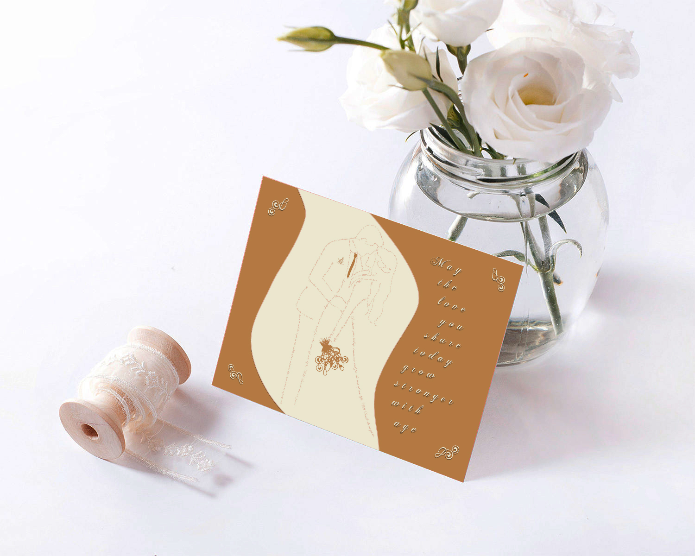
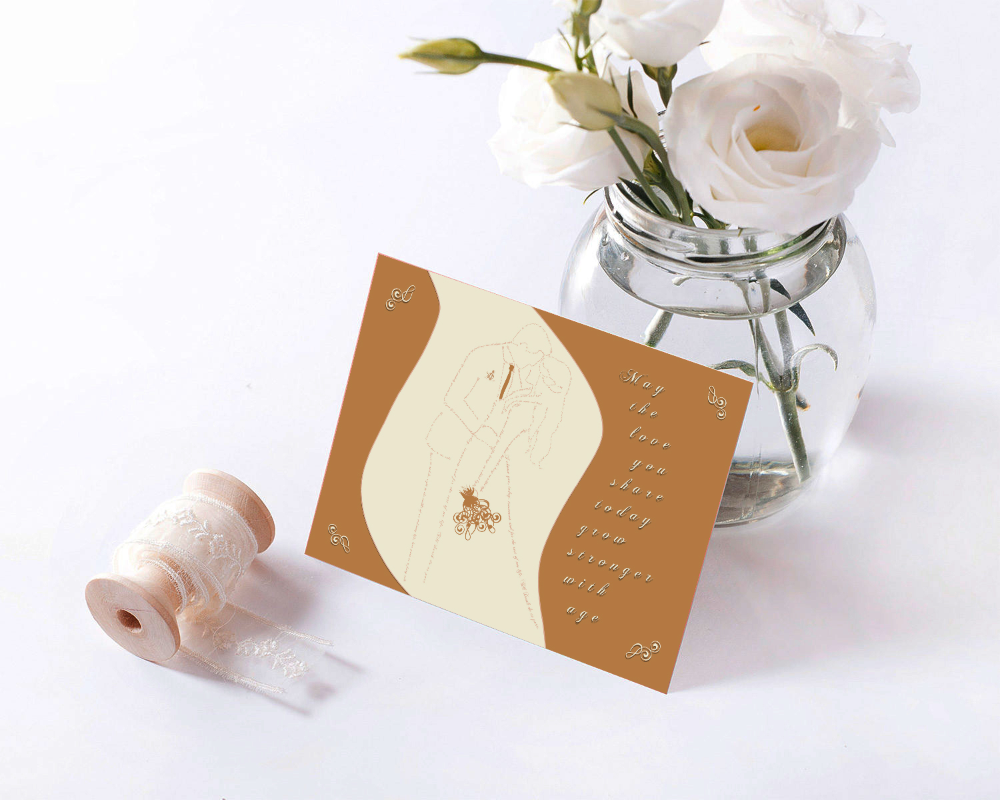

"I created a wedding card using only typography, specifically the Chopin Script font for its elegant and sophisticated appearance. The card features a central image of a bride and groom, constructed from wedding-related quotes.
To create the groom's tie and the bride's bouquet, I utilized periods, hyphens and the '<' symbol. These symbols were selected for their aesthetic appeal, which was enhanced by the design provided by the Chopin Script font. The corners of the card are also adorned with these symbols, creating a cohesive and visually impressive appealing.
Additionally, the flower bag is crafted from a combination of periods and equal signs, complementing the design of the groom's tie. The quote I chose for the card, "May the love you share today grow stronger with age," was selected for its universal appeal and the fitting message it conveys for any wedding.
Overall, this wedding card is a testament to the power of typography as an art form. It represents a unique and striking example of how typography can be used to create a visually stunning design.""
 
